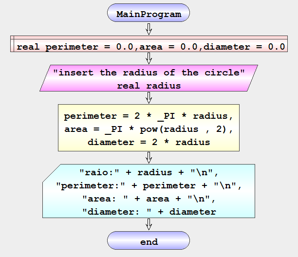

Execute
It is used to perform calculations on computational expressions and store their result in a variable defined in memory.
It also serves to execute procedures, that is, functions that do not calculate values.
This one with the multi-instruction allows you to do multiple calculations in one form.
| Fluxogram |
Pseudocode en-GB |
| |
execute <function> | <var> = <expression>[, <function> | <var> = <expression> …] |
• <var> – variable defined in memory
• <expression> – computacional expression
• <function> – fuction defined by the user
The simbol “|” represents “or”, this means that it can be <function> ou <var> = <expression>
Example – Define, read, calculate and print
Algorithm that exemplifies asks the user for the radius of a circle and then calculates the perimeter, area and diameter and prints the result on the console.
| Fluxogram en-GB |
Pseudocode en-GB |
|  |
begin MainProgram
define real perimeter = 0.0,area = 0.0,diameter = 0.0
read real radius "insert the radius of the circle"
execute perimeter = 2 * _PI * radius, area = _PI * pow(radius , 2), diameter = 2 * radius
write "raio:" + radius + "\n" , "perimeter:" + perimeter + "\n" , "area: " + area + "\n" , "diameter: " + diameter
end MainProgram
|